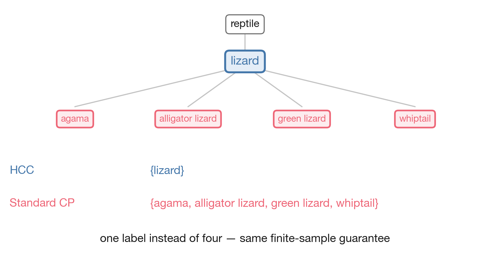
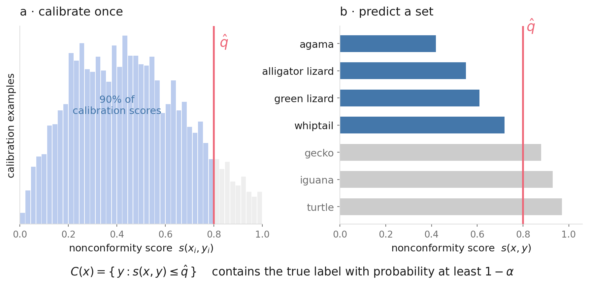
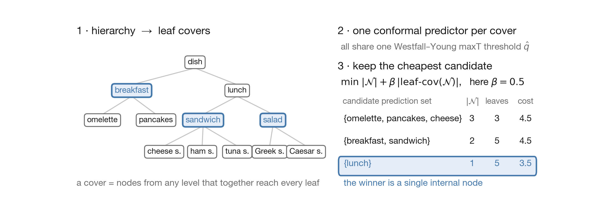
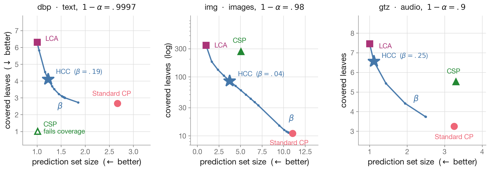

Abstract
Conformal prediction provides reliable uncertainty quantification by generating prediction sets with finite-sample coverage guarantees, yet it typically ignores hierarchical relationships between classes. We introduce Hierarchical Conformal Classification (HCC), a framework that integrates class hierarchies into the structure and semantics of prediction sets. HCC uses a constrained optimization problem formulation to produce prediction sets composed of nodes at various hierarchy levels while maintaining rigorous coverage guarantees. To ensure computational efficiency, we prove that a restricted subset of well-structured candidate solutions is sufficient to maintain coverage and approximate optimality. Empirical evaluations across audio, image, and text benchmarks, alongside a preliminary user study, demonstrate that HCC outperforms state-of-the-art methods and that hierarchical prediction sets align better with human preferences.
HCC uses the hierarchy of the classification labels to improve conformal classification usability while maintaining finite-sample coverage guarantees.
It produces prediction sets that are more compact, more interpretable, and better aligned with the domain semantics.

Background
Conformal prediction (CP) turns any scoring model \(\hat{f}\) into a set-valued predictor. Given a user-specified error level \(\alpha\), it returns a set \(C(x)\) of labels that is guaranteed to contain the ground truth with high probability:
\[ \mathbb{P}\big(Y_{n+1} \in C(X_{n+1})\big) \;\geq\; 1 - \alpha . \]
Split CP gets there in two steps. On a held-out calibration set \(\{(x_i, y_i)\}_{i=1}^{n}\) it computes a nonconformity score \(s(x_i, y_i)\). This score is low when the model finds the true label plausible, for instance \(s(x,y) = 1 - \hat{f}(x)_y\). Split CP takes the threshold \(\hat{q}\), the \(\lceil (n+1)(1-\alpha) \rceil / n\) empirical quantile of those scores. At test time it keeps every label the model scores at least as plausibly:
\[ C(x) \;=\; \{\, y \in \mathcal{Y} \;:\; s(x, y) \leq \hat{q} \,\}. \]

Labels, however, are rarely flat. Medical diagnoses, fraud types, music genres and document topics all come with a taxonomy, usually a directed acyclic graph (DAG). For example, the ImageNet labels are nodes of the WordNet taxonomy, which is a DAG. That structure expresses the domain semantics for some set of human users, which standard CP disregards. HCC on the other hand, uses the taxonomy to dynamically summarize large (subsets of) the prediction set in order to improve interpretability and usability while maintaining finite-sample coverage guarantees.
Problem
Write the taxonomy as a DAG \(\mathcal{T} = (\mathcal{V}, \mathcal{E})\) whose leaves \(\mathcal{L} \subseteq \mathcal{V}\) are the class labels, and let \(\mathrm{leaf\text{-}cov}(\mathcal{N})\) be the leaves reachable from a set of nodes \(\mathcal{N} \subseteq \mathcal{V}\). We interpret a flat prediction set containing e.g. the four known kinds of lizard as predicting the internal node `lizard' instead. In order to operationalise this intuition, we equip our predictors with the ability to output prediction sets that may flexibly include internal nodes as well as leaves:
\[ \mathbb{P}\big(Y_{n+1} \in \mathrm{leaf\text{-}cov}(\mathcal{N}(X_{n+1}))\big) \;\geq\; 1 - \alpha . \]
That immediately raises a trade-off. Predicting the root of \(\mathcal{T}\) satisfies any \(\alpha\) yet is entirely uninformative. Predictiong leaves exclusively is maximally specific but may produce large prediction sets. We quantify these two competing desiderate as follows. The size \(|\mathcal{N}|\) of the prediction set, and its specificity, i.e. the number \(|\mathrm{leaf\text{-}cov}(\mathcal{N})|\) of leaves reachable or covered by its nodes jointly.
Existing hierarchy-aware conformal methods each give up something. Most set-valued approaches for hierarchies are restricted to trees rather than DAGs. Hierarchical risk control bounds the distance between prediction and true label, and does not guarantee leaf-level coverage. The closest method, conformal structured prediction, needs a user-specified bound \(M\) on the nominal set size, relies on a predefined threshold grid that must contain the optimal threshold, and solves an integer program whose cost grows quickly with the size and depth of the taxonomy.
Hierarchical conformal classification
HCC states the trade-off between compactness i.e. nominal prediction set size and specificity i.e. reachable or covered leaves as a constrained optimization problem: among all hierarchy-consistent candidate sets that satisfy leaf-level coverage, return the candidate with lowest cost under:
\[ \min_{\mathcal{N}} \;\; |\mathcal{N}| \;+\; \beta \, \big|\mathrm{leaf\text{-}cov}(\mathcal{N})\big| , \]
where the single hyperparameter \(\beta \geq 0\) controls for nominal prediction set size and covered leaves. At \(\beta = 0\) the root is optimal and as \(\beta\) grows, HCC prefers candidates composed of nodes closer to the leaves.
Solving this optimization problem naively means searching all of \(2^{|\mathcal{V}|}\). We prove that it suffices to search a far smaller, well-structured family: the non-overlapping leaf covers. These are all sets of nodes, taken from any level, that together reach every leaf exactly once. The HCC algorithm consists of three steps:
- enumerate the leaf covers of \(\mathcal{T}\) and propagate calibration scores and ground truth labels up the hierarchy;
- calibrate one conformal predictor per cover, with a shared Westfall-Young maxT threshold \(\hat{q}\) so that coverage guarantees are upheld in the face of multiple comparisons and test-time selection;
- at inference, evaluate the relevant candidates against the objective and select the one with minimal cost. During this step, HCC employs an additional dynamic pruning based on the input, so that only solutions "in between" flat CP on the leaves and the lowest common ancestor of the resulting prediction set are evaluated.

Results
We evaluate on three hierarchical benchmarks: text (dbp, DBpedia-14 with a BERT
classifier), images (img, ImageNet over WordNet) and audio (gtz, GTZAN
genres). We compare against standard CP on the leaves, a lowest-common-ancestor baseline (LCA) and
conformal structured prediction (CSP).
By evaluating HCC at various \(\beta\) values, we trace the frontier of trade-offs between size and covered leaves in between the flat CP and LCA baselines.
LCA is the \(\beta = 0\) endpoint, and on ImageNet standard CP
lands on the large-\(\beta\) end of the same curve. CSP sits off the frontier, where HCC is better
on both axes at once where it meets coverage requirements (on dbp it misses coverage).

- Smaller, more specific sets. On ImageNet, HCC answers with 3.7 nodes covering 86 leaves, where standard CP needs 11.0 labels and CSP covers 270 leaves with 5.0 nodes on average.
-
Coverage holds. HCC meets its target on all three datasets and for every
\(\alpha\) we tested; CSP misses it on
dbp. Ablating either the Westfall-Young correction or the hierarchical score breaks coverage, showing relevance of both components. - It scales. On ImageNet HCC runs about 80× faster than CSP (103 s against 8 × 104 s), and an order of magnitude faster again with cached inference.
-
People prefer the sets. In a preliminary user study over 500 samples per
dataset with differing prediction sets, author annotators significantly preferred HCC over standard CP in 57% of cases on
dbpand 71% onimg(binomial test, \(p < 10^{-4}\)).
Further reading
- Angelopoulos & Bates, A Gentle Introduction to Conformal Prediction and Distribution-Free Uncertainty Quantification (2021) — the standard entry point.
- Angelopoulos, Bates, Fisch, Lei & Schuster, Conformal Risk Control (ICLR 2024).
- Mortier, Hüllermeier, Dembczyński & Waegeman, Set-valued prediction in hierarchical classification with constrained representation complexity (UAI 2022).
- Mortier et al., Conformal Prediction in Hierarchical Classification with Constrained Representation Complexity (2025).
- Zhang, Li & Bastani, Conformal Structured Prediction (ICLR 2025) — the CSP baseline.
- Miller, WordNet — the lexical hierarchy behind the ImageNet taxonomy.
Citation
@inproceedings{denhengst2026hierarchical,
title = {Hierarchical Conformal Classification},
author = {den Hengst, Floris and Blin, In{\`e}s and Mohammadi, Majid and
Shah, Syed Ihtesham and Younesian, Taranah},
booktitle = {Advances in Neural Information Processing Systems},
publisher = {Curran Associates, Inc.},
volume = {39, Main Conference},
year = {2026}
}